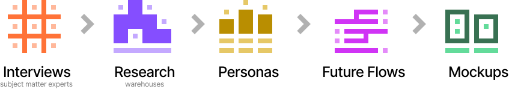

Blue Yonder
Warehouse 2030
The Warehouse Management System (WMS) is one of the most popular of the over two hundred products that Blue Yonder sells as part of their supply chain suite. Warehouse management is extremely complex. It's a very manual process, requiring 15-18 months of data entry and configuration with the help of experienced consultants guiding the customer through populating the thousands of fields necessary to create a digital twin of the customer's physical warehouse. And that's just for one warehouse!
One of our senior product directors asked me if I could explore what a future version of of the app could look like. What will WMS look like in 10 years? What can of current and future technologies can we envision being used to streamline the process of mapping the warehouse? How do we reduce the time to set up a new warehouse from 18 months down to a few weeks? Can we use machine learning to understand the volumes of data sitting in our databases and distill them into a simpler onboarding flow?
This wasn't an officially budgeted project, so I only had more than about 3 weeks to work on it, alongside my other budgeted projects .
Discovery
I decided to follow the following abbreviated product design lifecycle:
While I was working on this project, the WMS Team had kicked off work on a massive migration of the product from the non-cloud-based code-based to the new Blue Yonder SaaS platform. I was one of three product designers on that project. One of my colleagues, Maren, had previously worked with a fulfillment company called Dark Store. I was able to leverage my discovery artifacts from the WMS project and from Maren's research artifacts while working at Dark Store.
The breakdown of our artifacts was roughly as follows:
| Artifact | Sherif | Maren |
|---|---|---|
| Personas | 30% | 70% |
| Mental Model | -- | 100% |
| Workflow | 100% | -- |
| Types Of Stores | -- | 100% |
| Mockups | 100% | -- |
Personas
The first step was to try and figure out what personas worked in a warehouse. While I was able to come up with about 3-4 personas, Maren's research revealed over a half dozen more, for a total of a dozen personas. This was a lot more personas than I've ever worked with on any previous project. Figuring out the primary (and possibly secondary and tertiary) persona I was going to target for the Warehouse 2030 project would take a while.
Since the goal of this project was to reduce the time to create a digital twin of a warehouse, I decided to focus on the Regional DC Manager persona.

Mental Model
Since I was new to warehouse management, I was still unsure what the various personas did in a warehouse. Instead of simply zooming out and focusing only on the Regional DC Manager persona's tasks, I zoomed into the warehouse to get a high level understanding of how a modern warehouse functions and what the various personas do.
This ended up being very useful later on when it came time to create a new streamlined flow for the Regional DC Manager. (It turns out their job is to configure the warehouse to make it easier for the other personas to do their jobs as efficiently as possible. Without understanding how the warehouse functions, I would not have been able to create the final mockups.)

Workflow
Once I understood how a warehouse functions, and what the various personas do in the warehouse, I zoomed out again to focus on the tasks and responsibilities of the Regional DC Manager with regards to setting up a new warehouse.

There were three interesting ideas that I decided to explore in this workflow, that the current WMS doesn't do.
1. Simulate A Site
One of the most interesting aspects of this new version of WMS is the ability to simulate a site without having to install it on the customer cloud. This allows the customer to endlessly tweak their settings without impacting their own customers and employees, and only publish the configuration once everything is properly setup.
2. Draw A Site
Imagine that the Regional DC Manager is scouting for a location for a new warehouse. They open up a map, and find a place where they want to place the warehouse. They can then draw the warehouse using simple CAD like drawing tools, while collaborating with other stakeholders and architects. This ability to visually edit the warehouse on a map (instead of entering abstract numbers) would reduce the time to setup considerably and provide a much more concrete way to collaborate with other stakeholders.
3. Locate On A Map
Today, trying to locate a specific warehouse requires the Manager to know the cryptic alphanumeric code that represents that warehouse. How much easier would it be, if the Manager could simply enter an address, and then zoom in or out of a graphical map, and then click on the warehouse they're referencing?
Types of Stores
I mentioned earlier that configuring a digital twin of a warehouse can take well over a year, and can involve filling in dozens of pages and thousands of fields of configurations over and over again. What if we could use machine learning to analyze the over a decade of WMS data we have in our databases and use it to categorize the various warehouses? Could that reduce the amount of configuration that users would have to do if we could offer our users pre-configured warehouse templates?

Screens
Finally, it was time to take all the above research and distill them into a set of high fidelity screens in Figma. At the time I created these mockups, the Blue Yonder design system team in Karslruhe (Germany) was still putting the finishing touches to the Luminate design system (the Blue Yonder design system for our SaaS platform). For these mockups, I used whatever components were available, created new components in the style of the design system, and took screenshots of the rest as placeholders to be replaced if the project ever became official.
The screens below follow a scenario where a DC Regional Manager has logged into her account and is viewing the list of warehouses under her purview. For this scenario she wants to scout a location for a new warehouse, draw the warehouse on the map, configure it, and simulate it.


Conclusion
Since the goal of the WMS 2030 project was to spur discussion about where Warehouse Management might be heading in the next ten years, there was no immediate plan to put the designs into development. However, I have been following the roadmap for WMS and related projects, and some newer projects have incorporated ideas from this project.
So, How can I help you?